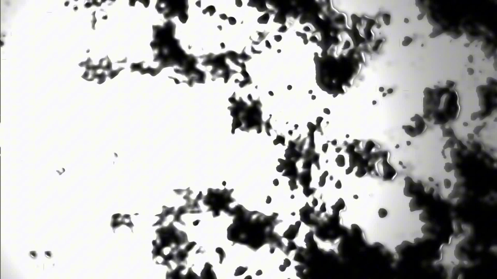

Vacuum 空
Composed by Danni Zhao. Visual design by Liuyang Tan.
Watch on YouTubeAbout the work
"Vacuum" is a Mix electronic music work integrating extensive orchestral special technique recordings and driven by wind speed data. Based on Orchidée (IRCAM) AI, Python scripts normalize wind speed time series and map them to rhythm density, dynamics, and instrument allocation—for instance, high-speed wind segments trigger active brass and percussion—allowing the orchestral texture to flow between natural motion and microscopic randomness. The algorithm adjusts instrument weights, performance parameters, and maps voice positioning in real time according to wind speed, creating a dynamic interplay between structured rules and stochastic deviations.
The visual component, realized in TouchDesigner, extends geometry along sound vectors, with fine white lines and dark blocks resonating through structural self-deconstruction. Within this continuously fracturing sonic space, perception fragments, and meaning drifts like light and shadow in nonexistent dimensions. Time loses direction; sound becomes an indescribable echo, seemingly never having occurred, yet never ceasing.
《空》是一首混合类电子音乐作品，结合大量管弦乐队特殊技法录音素材，引入风速数据驱动：基于 Orchidée（IRCAM） AI生成管弦乐，利用Python 脚本将风速时间序列归一化后映射为节奏密度、力度、乐器组合，如高速风段对应铜管与打击乐活跃等，使管弦乐在自然律动与微观随机性间流动。算法调整乐器权重与演奏参数、根据实时风速动态进行声部声像的映射匹配，使作品在规则与偶然偏差间游走。
视觉部分通过 TouchDesigner 实时生成，几何体沿声音矢量伸展，细密白纹与深色块面在结构自我解构中共振呼应。在不断自我解构的音响空间中，感知被剥离为残片，意义如同光影漂浮于不存在的维度之中。时间失去方向，声音成为无以名状的回声，仿佛从未发生，却也从未停止。
Visualization
